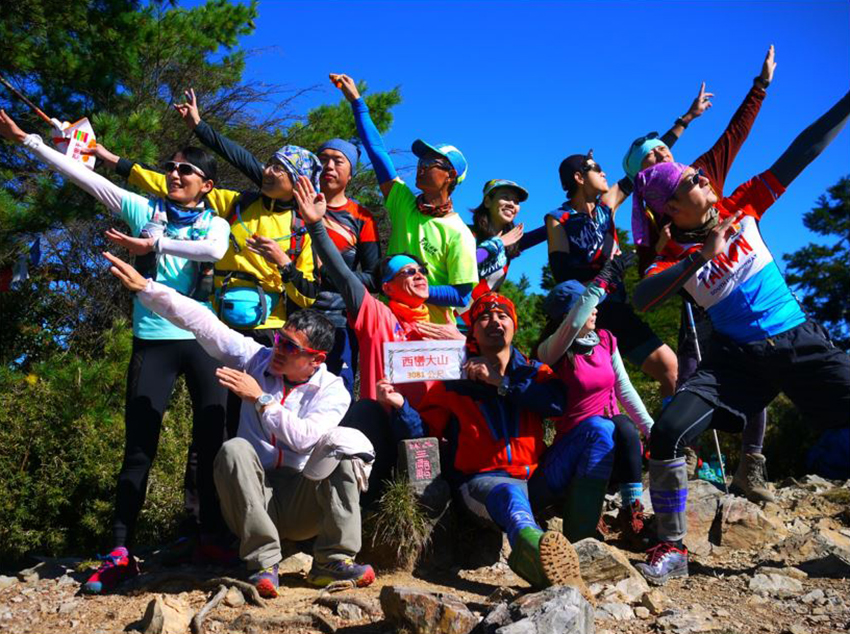
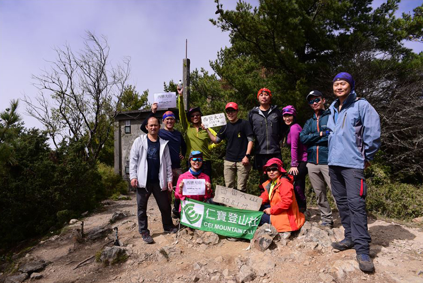
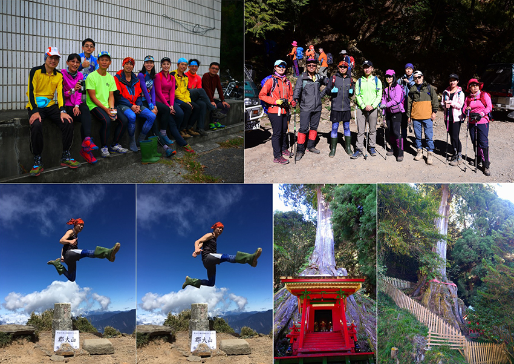

我一直相信當你開始對某樣東西產生興趣，不知不覺身邊就會出現種種機會。
 |
空中瑜珈，是在一次與朋友的聚會中聊天提到，她開心的與我分享上課的照片，動作看起來好優美、好有趣，心裡對課程的好奇也越來越深，於是一到家便認真查起相關課程，但空中瑜珈的課程都不便宜，加上當時對運動的想法是可以花錢在健身房，但不花再多的錢上團體課程，也就沒在找了。後來一家離家近的運動中心開幕，參與了免門票游泳的開幕活動，意外地發現有空中瑜珈課程，而且都有折扣，程度也是入門，決定來玩玩看。
開始課程，真的不是想像中的那樣，有張看起來輕鬆優美的空中照片。課程中每個動作用哪隻腳、哪隻手，我一直分不清楚，老師溫柔地一步一步帶，除此之外花了好多力氣在抓好掛布，怎麼用力抓好像都要滑下去，那時覺得，天哪!去健身房練肌力一年，怎麼會做什麼動作都這麼得無力。
|  |
前面幾堂課真的很受挫折，掛布會綁在腿上，而且全身的重量都在上面，腳會超級痛，上完也一定會瘀青，還有很多動作明明看起來很簡單，做起來卻好難，雖然做不到老師也會來幫忙，但心想有同學可以，我就應該也要可以，但我卻怎麼試都失敗，還好同學彼此間互相鼓勵，也為了最後可以有張美美的空中照片，我沒有因此放棄，反而積極想把肌力練好，希望下次上課可以更好，從中進步慢慢地找到了成就感，也愛上了這項運動。
課程到了一個程度，會發現老師教的難度愈來越輕易上手，也就越來越沒有成就感，所以我離開了我空中啟蒙老師。為了更難的挑戰動作，過程中一樣有很多挫折，但這些挫折經驗讓我知道，雖然過程不滿意，但我努力地試了，成果可以給我滿滿的成就感，所以我要想辦法讓自己表現得更好。
|  |
投入後也會發現空中運動這塊，可以學的東西非常多，教材從基礎固定U行掛布，可以做療癒瑜珈、基礎拍照動作及一系列串聯花式動作；還有舞綢使用可旋轉的U行掛布，在空中旋轉下進行串聯花式動作，以及空中環，這是一個圓形鋼圈，在鋼圈旋轉下進行花式動作，相較於掛布類支撐上需要更多的臂力及核心。我自己本身更愛立方體，是由鋼條組成立方體在空中旋轉，相較單面的空中環，動作上有更多變化性，不過也因為六個面變化，容易在動作過程中迷失方向。
|  |
另外有一項教材是目前對我來說挑戰性較高的綢吊，是一條掛布從中掛起，倒V下會有兩條繩子，需要上爬進行動作，上爬的方式也很多，除了腳底綁布的Footlocks，上爬都需要大量核心跟臂力撐住身體，相較其他教材沒有了支撐點跟掛點，需要透過動作來打點支撐。
 |
除了這些，課程也是有各種變化，像造型愛心環及空中傘等等，有興趣一起走進入空中運動世界吧。